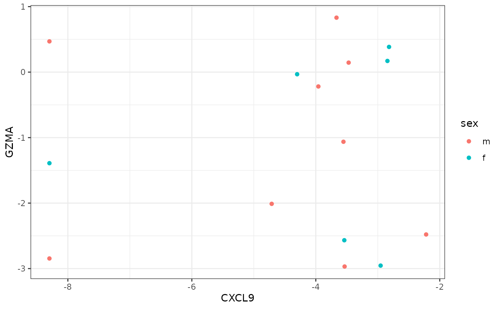

The FacileData package was written to facilitate easier analysis of large, multi-assay, high-throughput genomics datasets. To this end, the FacileData package provides two things:
FacileDataSet provides efficient storage and retrieval of arbitrarily large high-throughput genomics datasets. For example, a single FacileDataSet can be used to store all of the RNA-seq, microarray, RPPA, etc. data from the The Cancer Genome Atlas. This singular FacileDataSet allows analysts easy access to arbitrary subsets of these data without having to load all of it into memory.The Bioconductor ecosystem provides a number of data containers, like the SummarizedExperiment to store high-throughput genomics data and the metadata that goes along with it. These containers provide a consistent way for users to access the different aspects of the data that are required to successfully analyze genomics data and have served the community well for a long time, especially in the context of single-experiment projects.
Storing data in these containers, however, is sub-optimal in a few situations:
The fluent and efficient analysis of data from the TCGA poses even more problems since a multitude of assays have been run over each sample, such as RNA-seq, microarrays, exome-seq, etc. With all of this data in hand, analysts may want to look at how gene expression compares to copy number, or miRNA expression, etc.
In these scenarios, a single SummarizedExperiment is no longer up to the task of storing these data since the “feature-space” (rows of the SummarizedExperiment) of all the assays within a singular SummarizedExperiment must be equal.
These problems manifest themselves when we consider even the simplest of analysis scenarios, such as processing an RNA-seq assay into two different feature spaces, (1) gene-level counts; and (2) transcript-level counts. One would have to create two separate SummarizedExperiments with the same columns and colData, but different assay matrices given the different feature-spaces (genes vs. transcripts).
Using a single FacileDataSet, all of these data can be stored in the same data container, and the FacileData API allows analysts to retrieve data from each effortlessly.
Recently, the Bioconductor community has developed the MultiAssayExperiment objet to address many of the same issues the FacileDataSet was built to address. We can consider these complementary efforts, for now. One can imagine using a MultiAssayExperiment as a backend to store these data, and create a thin FacileData API wrapper, to create a FacileMultiAssayExperiment.
The FacileData API defines a set of query and retrieval functions over multi-assay genomics datasets that fits into the tidyverse.
To provide illustrative examples of the utility of the FacileData API, we rely on the FacileTCGADataSet package, which provides the full RNA-seq expression, miRNA expresion, and copy number data across all 33 indications (11,000+ samples) from the TCGA. Please see the FacileTCGADataSet package for more information regarding how these data were put together, and how to extend it.
As a teaser, we provide code snippets that show how to plot HER2 copy number vs. expression across the TCGA “BLCA” and “BRCA” indications using the FacileDataSet. We’ll then compare that to how the same code might be written using more traditional bioconductor containers.
library(FacileData)
# library(FacileTCGADataSet)
library(ggplot2)
# tcga <- FacileTCGADataSet()
tcga <- exampleFacileDataSet()
samples <- filter_samples(tcga, indication %in% c("BLCA", "BRCA"))
features <- filter_features(tcga, name == "ERBB2")
fdat <- samples %>%
with_assay_data(features, assay_name = "rnaseq", normalized = TRUE) %>%
with_assay_data(features, assay_name = "cnv_score") %>%
with_sample_covariates(c("indication", "sex"))
ggplot(fdat, aes(cnv_score_ERBB2, ERBB2, color=sex)) +
geom_point() +
facet_wrap(~ indication)
library(FacileData)
library(dplyr)
# library(FacileTCGADataSet)
# tcga <- FacileTCGADataSet()
tcga <- exampleFacileDataSet()
distro <- samples(tcga) %>%
with_sample_covariates(c("indication", "sample_type"))
ggplot(distro, aes(indication, fill=sample_type)) +
geom_bar() +
theme(axis.text.x=element_text(angle=90, hjust=1))The base interface is the FacileDataStore. There are no objects of this class, it rather serves as an interface that should be implemented by a subclass, i.e. a FacileDataSet, or a FacileSummarizedExperiment. An object that is(x, "FacileDataStore") == TRUE is assumed to implement the entire FacileData API.
Broadly speaking, there are two classes of functions that are used to pull data out of a FacileDataSet, the fetch_* and with_* functions. To a first approximation, we can consider the fetch_* functions to be the lowest level functions, and the with_* functions are higher-level accessors.
The with_* functions were written so that they can naturally be combined in pipe (%>%) data-manipulation chains. They provide analysts with a fluent and succinct API with which to perform exploratory data analyses.
For example, to retrieve normalized RNA-seq expression values for CXCL9 and GZMA along with survival and sex information for the samples inin the TCGA bladder (“BLCA”) indication, you can write:
features <- filter_features(tcga, name %in% c("CXCL9", "GZMA"))
blca.dat <- tcga %>%
filter_samples(indication == "BLCA") %>%
with_assay_data(features, assay_name="rnaseq") %>%
with_sample_covariates(c("OS", "sex"))
ggplot(blca.dat, aes(CXCL9, GZMA, color=sex)) +
geom_point()
Currently the API consists of:
fetch_assay_data(..., aggregate = TRUE)
Functions marked with (x) indicate that this function should be on its way out.
Please see the manpages for these functions for more details.
facile_frame: this works like a tibble, but has a handle to the FacileDataStore that it came from in a slot. We provide .facet_frame implementations for the dplyr and base::subset like verbs, as well as [ and [[ so that we can manipulate this as transparently as possible.Since MAE’s are the closest thing to a datastore that should also easily accomodate the FacileData API, we’d like to compare how similar analyses are done between the two approaches.
Let’s collect MAE use cases in the wild here, and compare ease of data retreival and analysis using between the two.